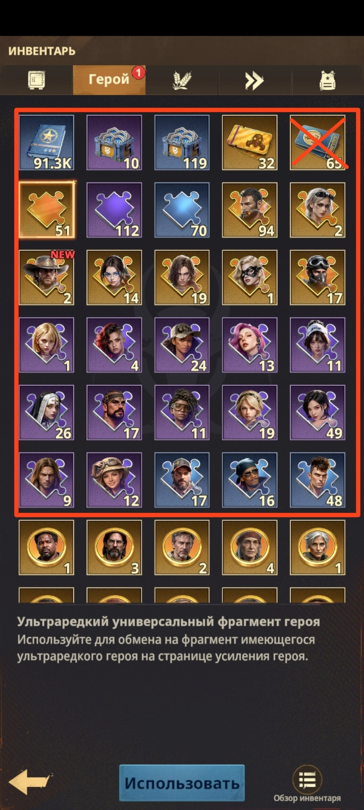
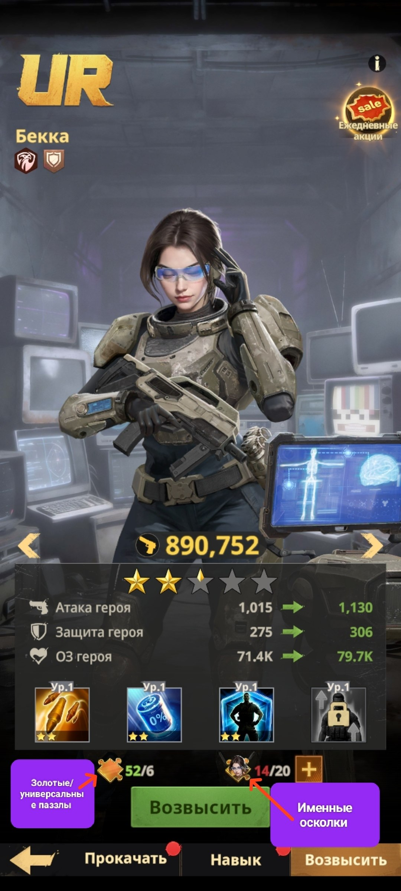
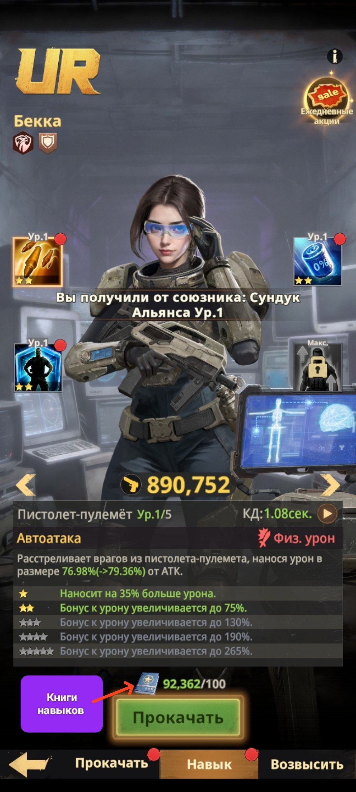
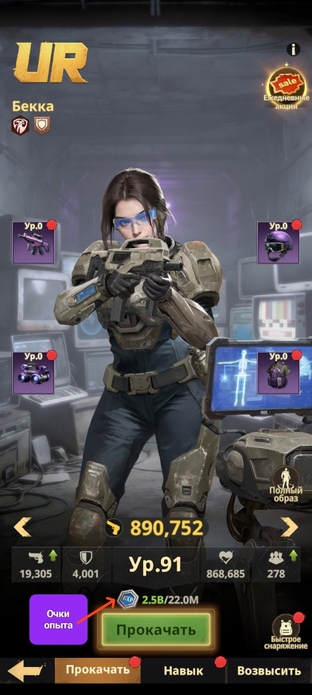
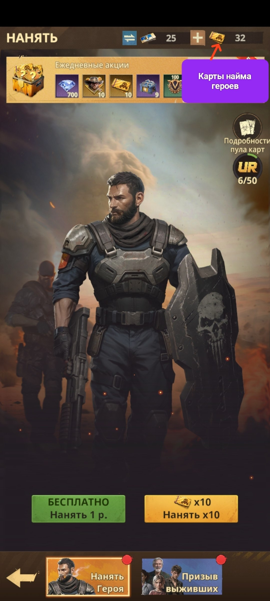

VS в четверг: задания и очки
📓 Четверг ❓ За что получаем очки VS в Четверг? ⚠️ С 5 утра МСК Четверга и до 5 утра МСК Пятницы копите все задания Радара ⚠️
🎒 Используем все накопленные расходники для героев • Золотые/фиолетовые/синие и именные паззлы героев - ими увеличиваем звёзды героям • Книги навыков - ими прокачиваем навыки героев • Очки опыта - ими поднимаем уровни героев • Карты найма героев - их используем в Трактире
⏰ Когда именно тратить Карты найма героев и Очки опыта тратим во время фазы «Улучшение героя» в «Готовности к миссии» - вроде бы, после 13:00 по МСК, но точное время уточните сами в Четверг.
🔁 После использования Все эти расходники после использования начинаете копить до следующего Четверга.

🎒 Инвентарь героя - паззлы, книги навыков и карты найма, которые тратим сегодня

⭐ «Возвысить» - золотые/универсальные паззлы и именные осколки увеличивают звёзды героя

📘 «Прокачать» (навык) - книги навыков прокачивают навыки героя

📈 «Прокачать» (уровень) - очки опыта поднимают уровень героя

🎫 «Нанять» - карты найма героев тратим здесь